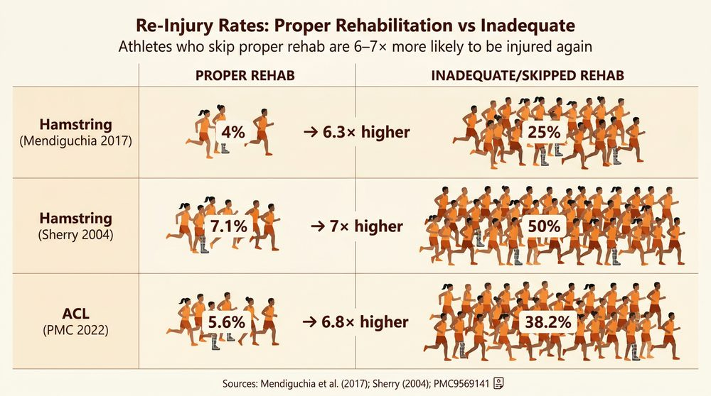

Responding to Injuries
The range of sporting injuries is huge — some are serious and potentially life-threatening, while others are relatively minor. The way you respond to an injury depends on two key factors: the severity of the injury and the knowledge and experience of the people present.
In all cases, the most qualified or experienced person available should carry out the initial assessment. In professional sport, this is usually a trained physiotherapist or team doctor. In grassroots sport, it might be a qualified first aider, a coach, or a teacher. Knowing the correct protocols can make the difference between a quick recovery and a much worse outcome.
There are three key protocols you need to know for the exam: SALTAPS for on-field assessment, DRABC for emergency situations, and PRICE for treating soft tissue injuries.
SALTAPS — On-Field Assessment
SALTAPS is a seven-step assessment protocol used on the field of play to determine whether an injured player can safely continue to play or train. Each letter represents a stage of the assessment, and the steps are carried out in order:
- S — See: observe the incident as it happens. What occurred? Where on the body was the impact? How did the player land or fall?
- A — Ask: ask the injured player what happened and where it hurts. Their description helps pinpoint the type and location of the injury.
- L — Look: visually examine the injured area for signs of swelling, deformity, bruising or bleeding.
- T — Touch: carefully feel the injured area to check for tenderness, swelling, heat or any abnormality in the bone or joint.
- A — Active movement: ask the player to move the injured area themselves. Can they bend or extend the joint without pain?
- P — Passive movement: gently move the injured area for the player. Can someone else move it without causing significant pain?
- S — Standing: can the player stand up and bear weight? If so, can they walk, jog or run?
If the injury appears serious at any stage of the SALTAPS process, you must stop immediately and seek medical help. Never force a player through the remaining steps if there are obvious signs of a fracture, dislocation or head injury.
If the player passes all seven stages without significant pain or difficulty, they may be able to return to play. If they fail at any point, they should be removed from the activity and given appropriate treatment.
DRABC — Emergency Response Protocol
DRABC is used when someone is unresponsive or in a life-threatening situation. This is a more serious protocol than SALTAPS and is designed to keep a casualty alive until professional medical help arrives.
- D — Danger: check the area is safe for both you and the casualty. Remove any hazards or move the person away from danger if it is safe to do so.
- R — Response: try to get a response from the person. Shake their shoulders gently and speak loudly: “Can you hear me? Open your eyes.”
- A — Airway: if there is no response, tilt the head back and lift the chin to open the airway. Check the mouth for any obstructions.
- B — Breathing: look, listen and feel for normal breathing for up to 10 seconds. Watch for chest movement, listen for breath sounds and feel for air on your cheek.
- C — Circulation: if the person is not breathing normally, call 999 immediately and begin CPR (chest compressions). Use a defibrillator if one is available.
Here is a detailed walkthrough of the DRABC protocol in a sporting context:
- Danger: clear other players from the area. Make sure there are no loose objects or equipment that could cause further harm. Do not move the casualty unless they are in immediate danger.
- Response: kneel beside the person. Tap their shoulders firmly but gently, and ask loudly “Can you hear me?” If they respond, keep them still and assess their injury. If there is no response, shout for help and move to the next step.
- Airway: place one hand on the forehead and two fingers under the chin. Tilt the head back gently to open the airway. Look inside the mouth for any visible blockage.
- Breathing: put your ear close to their mouth while looking at their chest. Look for the chest rising and falling, listen for breathing sounds, and feel for breath on your cheek. Do this for up to 10 seconds.
- Circulation: if they are not breathing, call 999. Begin CPR: place the heel of one hand on the centre of the chest, interlock your other hand on top, and give 30 chest compressions followed by 2 rescue breaths. Continue until help arrives or the person begins to breathe normally.
PRICE — Treatment Protocol
The PRICE protocol is the standard first-aid treatment for acute soft tissue injuries such as sprains and strains. It is designed to reduce pain and swelling in the immediate aftermath of an injury.
- P — Protection: protect the injury from further damage. This might involve applying a bandage, using a sling, or simply keeping the injured area still.
- R — Rest: stop the activity immediately. Do not put weight on the injured area or try to “play through” the pain.
- I — Ice: apply an ice pack to the injured area for 10–20 minutes to reduce pain and swelling. Never apply ice directly to the skin — always wrap it in a cloth or towel first.
- C — Compression: apply pressure with a bandage or support to reduce swelling. The compression should be firm but not so tight that it restricts blood flow.
- E — Elevation: raise the injured area above the level of the heart. This uses gravity to help drain excess fluid away from the injury and reduce swelling.
PRICE is used for acute soft tissue injuries only — sprains, strains and bruises. It is not appropriate for fractures, dislocations or head injuries. For those, you need to immobilise the injury and seek immediate medical attention.
The Recovery Position
The recovery position is used when a person is unconscious but still breathing normally. It keeps the airway clear and prevents the person from choking on vomit or fluids. This is a critical skill in sport, where head injuries and loss of consciousness can occur during contact activities.
Follow these steps carefully:
- Step 1: kneel beside the person and straighten their legs.
- Step 2: place the arm nearest to you at a right angle to their body, with the elbow bent and the palm facing upwards.
- Step 3: bring the far arm across their chest and hold the back of their hand against the cheek nearest to you.
- Step 4: with your other hand, pull the far knee up so the foot is flat on the ground.
- Step 5: keeping their hand pressed against their cheek, pull on the raised knee to roll them towards you onto their side.
- Step 6: tilt the head back to open the airway. Adjust the hand under the cheek to keep the head tilted.
- Step 7: monitor breathing and wait for emergency services to arrive.
Rehabilitation
Once the immediate treatment is complete, the focus shifts to rehabilitation — the process of recovering from injury and returning to full fitness. Effective rehabilitation is essential for a safe and complete recovery.
Graduated Return to Play
A graduated return to play means starting with gentle, low-intensity activity and progressively increasing the difficulty over days or weeks. The player only moves to the next stage if they are symptom-free. For example, a footballer recovering from a hamstring strain might begin with walking, progress to light jogging, then running, then sprinting, then ball work, and finally full-contact training.
Physiotherapy
A physiotherapist designs specific exercises to rebuild strength, flexibility and range of motion in the injured area. These exercises are tailored to the individual and the type of injury. For a knee ligament injury, this might include resistance exercises to strengthen the quadriceps and hamstrings, balance work to restore stability, and stretching to regain full range of motion.
Psychological Rehabilitation
Recovering from injury is not just physical. Many athletes experience frustration, loss of confidence, anxiety about re-injury, and a drop in motivation during long periods away from their sport. Psychological support — such as goal setting, positive self-talk and working with a sports psychologist — helps athletes maintain the right mindset throughout recovery.

Returning to sport too soon after an injury carries serious risks: the original injury may recur, it could develop into a chronic problem, or the outcome could be significantly worse than the initial injury. A graduated, supervised return is always safer than rushing back.